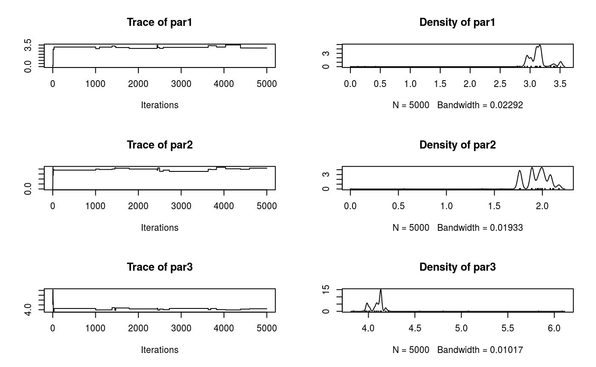
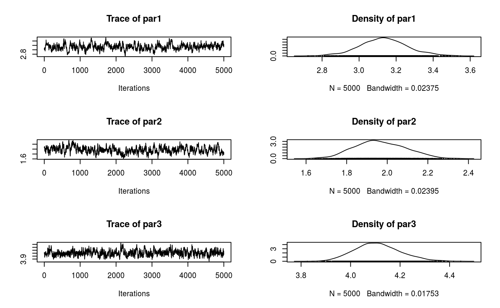

What
The fmcmc R package provides a lightweight general framework for implementing Markov Chain Monte Carlo methods based on the Metropolis-Hasing algorithm. This implementation’s main purpose lies in the fact that the user can incorporate the following in a flexible way:
Automatic convergence checker: The algorithm splits the MCMC runs according to the frequency with which it needs to check convergence. Users can use either one of the included functions (
convergence_gelman,convergence_geweke, etc.), or provide their own.Run multiple chains in parallel fashion: Using either a
PSOCKcluster (default), or providing a personalized cluster object like the ones in theparallelR package.User defined transition kernels: Besides of canonical Gaussian Kernel, users can specify their own or use one of the included in the package, for example:
kernel_normal,kernel_unif, orkernel_reflective.
All the above without requiring compiled code.
Who is this for?
While a lot of users rely on MCMC tools such as Stan (via the rstan package) or WinBUGS (via rstan), in several settings either these tools are not enough or provide too much for things that do not need that much. So, this tool is for you if:
You have a simple model to estimate with Metropolis-Hastings.
You want to run multiple chains of your model using out-of-the-box parallel computing.
You don’t want (or cannot) rely on external tools (so you just need good-old base R only for your models).
You want to implement a model in which your model parameters are either bounded (like a standard error, for example), or are not, say, continuous (e.g., a size variable in a Binomial distribution), so you need your own transition kernel.
In any other case, you may want to take a look at the previously mentioned R packages, or check out the mcmc R package, which also implements the Metropolis-Hastings algorithm (although with not all the features that this R package has), the adaptMCMC R package, or the MCMCpack R package.
Citation
To cite fmcmc in publications use:
Vega Yon et al., (2019). fmcmc: A friendly MCMC framework.
Journal of Open Source Software, 4(39), 1427,
https://doi.org/10.21105/joss.01427
A BibTeX entry for LaTeX users is
@Article{,
title = {fmcmc: A friendly MCMC framework},
author = {George {Vega Yon} and Paul Marjoram},
journal = {The Journal of Open Source Software},
year = {2019},
month = {jul},
volume = {4},
number = {39},
doi = {10.21105/joss.01427},
url = {https://doi.org/10.21105/joss.01427},
}Example: Linear regression model
First run
In the following we show how to use the package for estimating parameters in a linear regression model. First, let’s simulate some data to use:
As you can see, in this case we have three parameters to estimate, the constant (2.0), the \(\beta\) coefficient (2.0), and the standard deviation parameter of the error (1.5).
To estimate this model, we can either maximize the log-likelihood function–which is what is usually done–or we could do it using MCMC. In either case, we need to specify the log(unnormalized some times)-likelihood function:
ll <- function(p, X., y.) {
joint_ll <- dnorm(y. - (p[1] + X.*p[2]), sd = p[3], log = TRUE)
joint_ll <- sum(joint_ll)
# If is undefined, then we explicitly return infinte (instead of NaN, for
# example)
if (!is.finite(joint_ll))
return(-Inf)
joint_ll
}Notice that the function has more than 1 argument, in this case, p, which is the vector of parameters, X. and y., which hold the data of our model.
Let’s do a first run of the MCMC algorithm using the function of the same name (first, load the package, of course):
library(fmcmc)
# Running the MCMC (we set the seed first)
set.seed(1215)
ans <- MCMC(
ll,
initial = c(0, 0, sd(y)),
nsteps = 5000,
X. = X,
y. = y
)As the output object is an object of class mcmc from the coda R package, we can use all the functions from it on our output:

##
## Iterations = 1:5000
## Thinning interval = 1
## Number of chains = 1
## Sample size per chain = 5000
##
## 1. Empirical mean and standard deviation for each variable,
## plus standard error of the mean:
##
## Mean SD Naive SE Time-series SE
## par1 3.126 0.1893 0.002677 0.03128
## par2 1.943 0.1234 0.001746 0.04176
## par3 4.093 0.0930 0.001315 0.01168
##
## 2. Quantiles for each variable:
##
## 2.5% 25% 50% 75% 97.5%
## par1 2.951 3.013 3.112 3.172 3.511
## par2 1.763 1.892 1.956 2.026 2.171
## par3 3.979 4.064 4.106 4.134 4.186While the summary statistics look very good (we got very close to the original parameters), the trace of the parameters looks vary bad (poor mixing). We can re-run the algorithm changing the scale parameter in the kernel_normal function. In order to do so, we can simply pass ans as the initial argument so that the function starts from the last point of that chain:
ans <- MCMC(
ll,
initial = ans,
nsteps = 5000,
X. = X,
y. = y,
kernel = kernel_normal(scale = .05) # We can set the scale parameter like this
)
plot(ans)
Much better!
Automatic stop
Now, suppose that the algorithm actually takes a lot of time to actually reach stationary state, then it would be nice to actually sample from the posterior distribution once convergence has been reached. In the following example we use multiple chains and the Gelman diagnostic to check for convergence of the chain:
set.seed(1215) # Same seed as before
ans <- MCMC(
ll,
initial = c(0, 0, sd(y)),
nsteps = 5000,
X. = X,
y. = y,
kernel = kernel_normal(scale = .05),
nchains = 2, # Multiple chains
conv_checker = convergence_gelman(50) # Checking for conv. every 200 steps
)## Convergence has been reached with 1000 steps (1000 final count of samples).As a difference from the previous case, now we didn’t had to wait until the 5,000 steps were done, but the algorithm stopped for us, allowing us to start generating the desired sample much quicker.
Kernels: Making sure that we get positive values
For this final example, we will use the kernel argument and provide what corresponds to a transition kernel which makes proposals within certain boundaries, in particular, we want the algorithm to propose only positive values for the sd parameter, which we now must be positive.
More over, since we now from a fact that we will only get positive values, we can go further and modify ll skipping the check for finite values:
Much simpler function! Let’s do the call of the MCMC function specifying the right transition kernel to increase the acceptance rate. In this example, we will set the max of all parameters to be 5.0, and the min to be -5.0 for the constant and 0 for the beta coefficient and the variance parameter, all this using the kernel_reflective (which implements a normal kernel with boundaries) function:
set.seed(1215) # Same seed as before
ans <- MCMC(
ll,
initial = c(0, 0, sd(y)),
nsteps = 5000,
X. = X,
y. = y,
kernel = kernel_reflective(
ub = 5.0, # All parameters have the same upper bound
lb = c(-5.0, 0.0, 0.0), # But lower bound is specified per parameter
scale = 0.05 # This is the same scale as before
),
nchains = 2,
conv_checker = convergence_gelman(50)
)## Convergence has been reached with 550 steps (550 final count of samples).Again, as the proposal kernel has lower and upper bounds, then we are guaranteed that all proposed states are within the support of the parameter space.
Contributing to fmcmc
We welcome contributions to fmcmc. Whether it is reporting a bug, starting a discussion by asking a question, or proposing/requesting a new feature, please go by creating a new issue here so that we can talk about it.
Please note that the ‘fmcmc’ project is released with a Contributor Code of Conduct. By contributing to this project, you agree to abide by its terms.